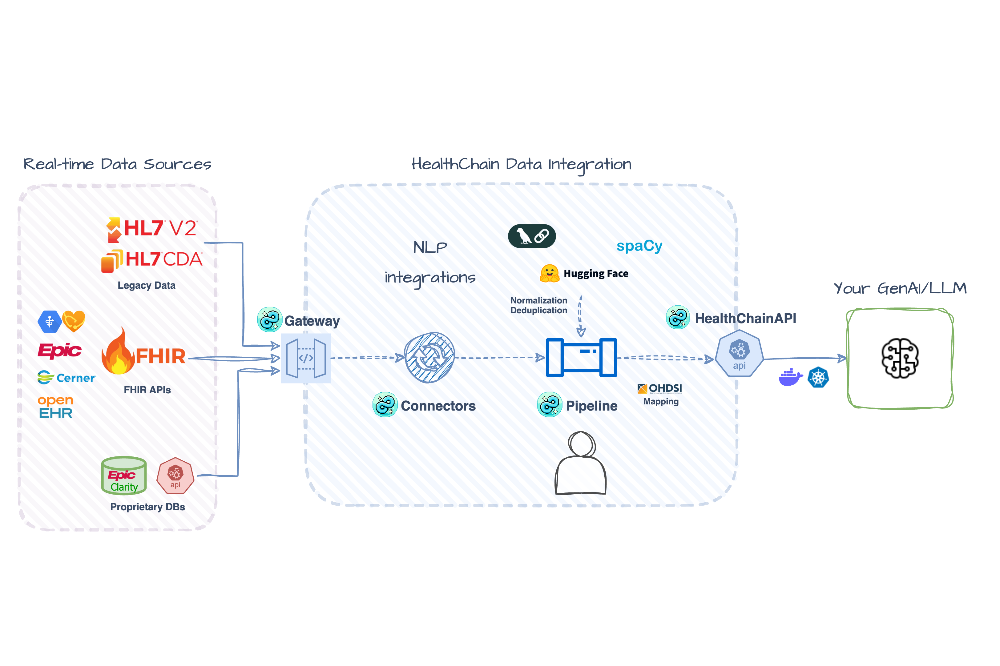

Multi-Source Patient Data Aggregation
This example shows you how to aggregate patient data from multiple FHIR sources and track data provenance: essential for building AI applications that train on diverse data, query multiple EHR vendors in RAG systems, or construct unified patient timelines from fragmented health records.
Check out the full working example here!
 Illustrative Architecture - actual implementation may vary.
Setup
We'll use Epic's public FHIR sandbox. If you haven't set up Epic sandbox access yet, see the FHIR Sandbox Setup Guide for detailed instructions.
Once you have your Epic credentials, configure them in a .env file:
# .env file
EPIC_BASE_URL=https://fhir.epic.com/interconnect-fhir-oauth/api/FHIR/R4
EPIC_CLIENT_ID=your_non_production_client_id
EPIC_CLIENT_SECRET_PATH=path/to/privatekey.pem
EPIC_TOKEN_URL=https://fhir.epic.com/interconnect-fhir-oauth/oauth2/token
EPIC_USE_JWT_ASSERTION=true
Load your Epic credentials from the .env file and create a connection string compatible with the FHIR gateway:
from healthchain.gateway.clients import FHIRAuthConfig
config = FHIRAuthConfig.from_env("EPIC")
EPIC_URL = config.to_connection_string()
Set Up FHIR Gateway
FHIR Gateways connect to external FHIR servers and handles authentication, connection pooling, and token refresh automatically. Add the Epic sandbox as a source:
from healthchain.gateway import FHIRGateway
gateway = FHIRGateway()
gateway.add_source("epic", EPIC_URL)
# Optional: Add Cerner's public sandbox (no auth required)
CERNER_URL = "fhir://fhir-open.cerner.com/r4/ec2458f2-1e24-41c8-b71b-0e701af7583d"
gateway.add_source("cerner", CERNER_URL)
# You can add more sources:
# gateway.add_source("other source", fhir://url)
Note
Cerner's public sandbox patient cohort differs from Epic's. For demo/testing with sandboxes, expect incomplete aggregation if patient cohorts don't overlap - this is normal for the public test data.
In production, you must perform your own patient identity matching (MPI/crosswalk) before aggregation.
Create Aggregation Handler
Define an aggregation handler that queries multiple FHIR sources for Condition resources.
from healthchain.fhir import merge_bundles
@gateway.aggregate(Condition)
def get_unified_patient(patient_id: str, sources: List[str]) -> Bundle:
"""Aggregate conditions from multiple FHIR sources with provenance tracking."""
bundles = []
for source in sources:
try:
bundle = gateway.search(
Condition,
{"patient": patient_id},
source,
add_provenance=True, # Track which EHR the data came from
provenance_tag="aggregated",
)
bundles.append(bundle)
except Exception as e:
print(f"Error from {source}: {e}")
# Continue with partial data rather than fail completely
# Combine conditions across sources
merged_bundle = merge_bundles(bundles, deduplicate=True)
return merged_bundle
What this handler does
- Queries each configured FHIR source for patient conditions
- Adds Meta tags to track data provenance (which source each condition came from, preserves existing metadata)
- Handles errors gracefully – partial data is better than no data
- Deduplicates identical conditions across sources
Example FHIR Metadata
{
"resourceType": "Condition",
"id": ...,
"meta": {
"lastUpdated": "2025-10-10T15:23:50.167941Z", // Updated timestamp
"source": "urn:healthchain:source:epic", // Adds source
"tag": [
{
"system": "https://dotimplement.github.io/HealthChain/fhir/tags",
"code": "aggregated",
"display": "Aggregated"
} // Appends a custom HealthChain tag
]
}
...
}
Build the Service
Register the gateway with HealthChainAPI to create REST endpoints.
import uvicorn
from healthchain.gateway import HealthChainAPI
app = HealthChainAPI()
app.register_gateway(gateway, path="/fhir")
uvicorn.run(app)
FHIR Endpoints Provided by the Service
/fhir/*- Standard FHIR operations (read,search,create,update)/fhir/metadata- CapabilityStatement describing supported resources and operations/fhir/status- Operational status and metadata for gateway
Add Processing Pipeline (Optional)
For additional processing like terminology mapping or quality checks, create a Document Pipeline.
Document pipelines are optimized for text and structured data processing, such as FHIR resources. When you initialize a Document with FHIR Bundle data, it automatically extracts and separates metadata resources from the clinical resources for easier inspection and error handling:
# Initialize Document with a Bundle
doc = Document(data=merged_bundle)
# OperationOutcomes are automatically extracted and available
doc.fhir.operation_outcomes # List of OperationOutcome resources
# Clinical resources remain in the bundle
doc.fhir.bundle # Bundle with clinical resources
doc.fhir.problem_list # List of Condition resources
doc.fhir.medication_list # List of MedicationStatement resources
Add processing nodes using decorators:
from healthchain.pipeline import Pipeline
from healthchain.io.containers import Document
pipeline = Pipeline[Document]()
@pipeline.add_node
def deduplicate(doc: Document) -> Document:
...
@pipeline.add_node
def add_annotation(doc: Document) -> Document:
...
# Apply the pipeline
doc = Document(data=merged_bundle)
doc = pipeline(doc)
Common Pipeline Uses
- Terminology mapping (ICD-10 ↔ SNOMED CT)
- Data enrichment (risk scores, clinical decision support)
- Quality checks (validate completeness, flag inconsistencies)
- Consent filtering (apply patient consent rules)
Test the Service
To test aggregation, request /fhir/aggregate/Condition/{patientId} with the sources parameter (e.g., epic,cerner).
Example uses Epic patient eIXesllypH3M9tAA5WdJftQ3; see Epic sandbox for more test patients.
Expected Outputs
Example output when querying Linda Ross (Epic patient eIXesllypH3M9tAA5WdJftQ3):
✓ Patient: Ross, Linda Jane
✓ Conditions retrieved: 2
Sample conditions:
• Moderate persistent asthma
Codes: ICD10-CM:J45.40, SNOMED:427295004, ICD9:493.90
Source: urn:healthchain:source:epic
Severity: Medium
Onset: 1999-03-08
• Bronchitis with asthma, acute
Codes: ICD10-CM:J20.9/J45.909, SNOMED:405944004, ICD9:466.0
Source: urn:healthchain:source:epic
Severity: High
Onset: 2019-05-24
Aggregated Result: With provenance tags and pipeline processing
Sample Bundle with deduplicated Conditions aggregated from Epic and Cerner. Each includes source details (meta.source, meta.tag) and a pipeline-added note.
{
"resourceType": "Bundle",
"type": "collection",
"entry": [
{
"resource": {
"resourceType": "Condition",
"id": "eOCME6XUbCLYmFlVf2l1G0w3",
"meta": {
"lastUpdated": "2025-10-10T15:23:50.167941Z", // Updated by HealthChain Gateway
"source": "urn:healthchain:source:epic", // Added by HealthChain Gateway
"tag": [{
"system": "https://dotimplement.github.io/HealthChain/fhir/tags",
"code": "aggregated",
"display": "Aggregated"
}] // Added by HealthChain Gateway
},
"clinicalStatus": { "text": "Active" },
"severity": { "text": "Medium" },
"code": {
"coding": [
{
"system": "http://hl7.org/fhir/sid/icd-10-cm",
"code": "J45.40",
"display": "Moderate persistent asthma, uncomplicated"
},
{
"system": "http://snomed.info/sct",
"code": "427295004",
"display": "Moderate Persistent Asthma"
},
{
"system": "http://hl7.org/fhir/sid/icd-9-cm",
"code": "493.90"
}
],
"text": "Moderate persistent asthma"
},
"subject": {
"reference": "Patient/eIXesllypH3M9tAA5WdJftQ3",
"display": "Ross, Linda Jane"
},
"onsetDateTime": "1999-03-08",
"note": [{
"text": "This resource has been processed by healthchain pipeline"
}] // Added by HealthChain Pipeline
}
},
{
"resource": {
"resourceType": "Condition",
"id": "etZVq9vWdHQ4q0Y6INaFhig3",
"meta": {
"lastUpdated": "2025-10-10T15:23:50.168175Z", // Updated by HealthChain Gateway
"source": "urn:healthchain:source:epic", // Added by HealthChain Gateway
"tag": [{
"system": "https://dotimplement.github.io/HealthChain/fhir/tags",
"code": "aggregated"
}] // Added by HealthChain Gateway
},
"severity": { "text": "High" },
"code": {
"coding": [
{
"system": "http://hl7.org/fhir/sid/icd-10-cm",
"code": "J20.9",
"display": "Acute bronchitis, unspecified"
},
{
"system": "http://snomed.info/sct",
"code": "405944004",
"display": "Asthmatic Bronchitis"
}
],
"text": "Bronchitis with asthma, acute"
},
"onsetDateTime": "2019-05-24",
"note": [{
"text": "This resource has been processed by healthchain pipeline"
}] // Added by HealthChain Pipeline
}
}
]
}
OperationOutcome: Authorization warnings
You'll see this if you haven't authorized access to the correct FHIR resources when you set up your FHIR sandbox.
{
"resourceType": "OperationOutcome",
"meta": {
"source": "urn:healthchain:source:epic"
},
"issue": [
{
"severity": "warning",
"code": "suppressed",
"details": {
"coding": [{
"system": "urn:oid:1.2.840.114350.1.13.0.1.7.2.657369",
"code": "59204"
}]
},
"diagnostics": "Client not authorized for Condition - Encounter Diagnosis"
},
{
"severity": "warning",
"code": "suppressed",
"diagnostics": "Client not authorized for Condition - Health Concerns"
},
{
"severity": "warning",
"code": "suppressed",
"diagnostics": "Client not authorized for Condition - Medical History"
}
]
}
Expected Error Handling
You'll see this when querying a patient that doesn't exist in a source:
What You've Built
A production-ready data aggregation service with:
- Multi-vendor support - Query Epic, Cerner, and other FHIR sources simultaneously
- Automatic provenance tracking -
meta.sourcefield shows which EHR each resource came from - Error resilience - Handles missing patients, network failures, auth issues gracefully
- Deduplication - Merges identical conditions across sources
- Pipeline extensibility - Add custom processing for terminology mapping, NLP, or quality checks
Use Cases
-
Data Harmonization: Use pipelines to normalize terminology (ICD-10 ↔ SNOMED CT), validate completeness, and flag inconsistencies across sources. Combine with clinical NLP engines to extract and aggregate data from unstructured clinical notes alongside structured FHIR resources.
-
RAG Systems: Build retrieval systems that search across multiple health systems. The aggregator provides the unified patient context LLMs need for clinical reasoning.
-
Training Data for AI Models: Aggregate diverse patient data across EHR vendors for model training. Provenance tags enable stratified analysis (e.g., "how does model performance vary by data source?").
Next Steps
- Try another FHIR server: Set up a different FHIR server where you can upload the same test patients to multiple instances for true multi-source aggregation.
- Expand resource types: Change
ConditiontoMedicationStatement,Observation, orProcedureto aggregate different data. - Add processing: Extend the pipeline with terminology mapping, entity extraction, or quality checks.
- Build on it: Use aggregated data in the Clinical Coding tutorial or feed it to your LLM application.